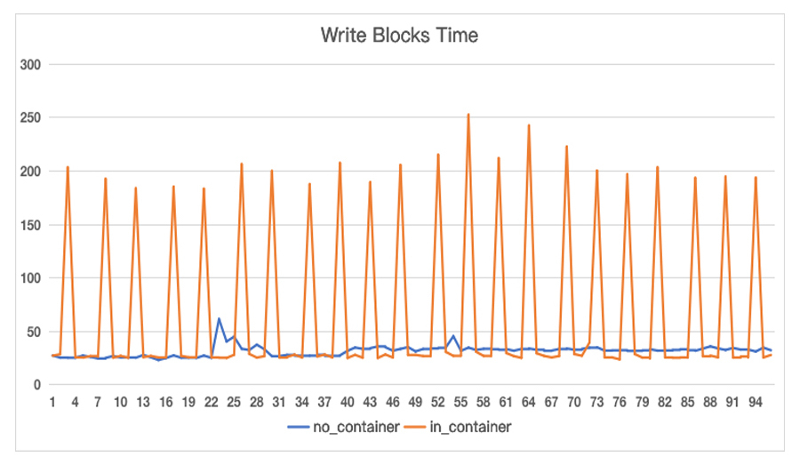
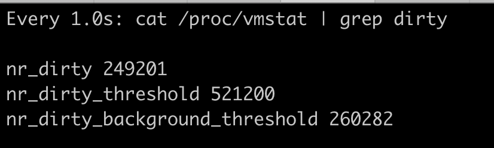

- 00 开篇词 一个态度两个步骤，成为容器实战高手.md.html
- 01 认识容器：容器的基本操作和实现原理.md.html
- 02 理解进程（1）：为什么我在容器中不能kill 1号进程？.md.html
- 03 理解进程（2）：为什么我的容器里有这么多僵尸进程？.md.html
- 04 理解进程（3）：为什么我在容器中的进程被强制杀死了？.md.html
- 05 容器CPU（1）：怎么限制容器的CPU使用？.md.html
- 06 容器CPU（2）：如何正确地拿到容器CPU的开销？.md.html
- 07 Load Average：加了CPU Cgroup限制，为什么我的容器还是很慢？.md.html
- 08 容器内存：我的容器为什么被杀了？.md.html
- 09 Page Cache：为什么我的容器内存使用量总是在临界点.md.html
- 10 Swap：容器可以使用Swap空间吗？.md.html
- 11 容器文件系统：我在容器中读写文件怎么变慢了？.md.html
- 12 容器文件Quota：容器为什么把宿主机的磁盘写满了？.md.html
- 13 容器磁盘限速：我的容器里磁盘读写为什么不稳定_.md.html
- 14 容器中的内存与IO：容器写文件的延时为什么波动很大？.md.html
- 15 容器网络：我修改了_proc_sys_net下的参数，为什么在容器中不起效？.md.html
- 16 容器网络配置（1）：容器网络不通了要怎么调试.md.html
- 17 容器网络配置（2）：容器网络延时要比宿主机上的高吗.md.html
- 18 容器网络配置（3）：容器中的网络乱序包怎么这么高？.md.html
- 19 容器安全（1）：我的容器真的需要privileged权限吗.md.html
- 20 容器安全（2）：在容器中，我不以root用户来运行程序可以吗？.md.html
- 加餐01 案例分析：怎么解决海量IPVS规则带来的网络延时抖动问题？.md.html
- 加餐02 理解perf：怎么用perf聚焦热点函数？.md.html
- 加餐03 理解ftrace（1）：怎么应用ftrace查看长延时内核函数？.md.html
- 加餐04 理解ftrace（2）：怎么理解ftrace背后的技术tracepoint和kprobe？.md.html
- 加餐05 eBPF：怎么更加深入地查看内核中的函数？.md.html
- 加餐06 BCC：入门eBPF的前端工具.md.html
- 结束语 跳出舒适区，突破思考的惰性.md.html
- 捐赠
14 容器中的内存与IO：容器写文件的延时为什么波动很大？
你好，我是程远。这一讲，我们继续聊一聊容器中写文件性能波动的问题。
你应该还记得，我们[上一讲]中讲过Linux中的两种I/O模式，Direct I/O和Buffered I/O。
对于Linux的系统调用write()来说，Buffered I/O是缺省模式，使用起来比较方便，而且从用户角度看，在大多数的应用场景下，用Buffered I/O的write()函数调用返回要快一些。所以，Buffered I/O在程序中使用得更普遍一些。
当使用Buffered I/O的应用程序从虚拟机迁移到容器，这时我们就会发现多了Memory Cgroup的限制之后，write()写相同大小的数据块花费的时间，延时波动会比较大。
这是怎么回事呢？接下来我们就带着问题开始今天的学习。
问题再现
我们可以先动手写一个小程序，用来模拟刚刚说的现象。
这个小程序我们这样来设计：从一个文件中每次读取一个64KB大小的数据块，然后写到一个新文件中，它可以不断读写10GB大小的数据。同时我们在这个小程序中做个记录，记录写每个64KB的数据块需要花费的时间。
我们可以先在虚拟机里直接运行，虚拟机里内存大小是大于10GB的。接着，我们把这个程序放到容器中运行，因为这个程序本身并不需要很多的内存，我们给它做了一个Memory Cgroup的内存限制，设置为1GB。
运行结束后，我们比较一下程序写数据块的时间。我把结果画了一张图，图里的纵轴是时间，单位us；横轴是次数，在这里我们记录了96次。图中橘红色的线是在容器里运行的结果，蓝色的线是在虚拟机上运行的结果。
结果很明显，在容器中写入数据块的时间会时不时地增高到200us；而在虚拟机里的写入数据块时间就比较平稳，一直在30～50us这个范围内。

通过这个小程序，我们再现了问题，那我们就来分析一下，为什么会产生这样的结果。
时间波动是因为Dirty Pages的影响么？
我们对文件的写入操作是Buffered I/O。在前一讲中，我们其实已经知道了，对于Buffer I/O，用户的数据是先写入到Page Cache里的。而这些写入了数据的内存页面，在它们没有被写入到磁盘文件之前，就被叫作dirty pages。
Linux内核会有专门的内核线程（每个磁盘设备对应的kworker/flush 线程）把dirty pages写入到磁盘中。那我们自然会这样猜测，也许是Linux内核对dirty pages的操作影响了Buffered I/O的写操作？
想要验证这个想法，我们需要先来看看dirty pages是在什么时候被写入到磁盘的。这里就要用到/proc/sys/vm里和dirty page相关的内核参数了，我们需要知道所有相关参数的含义，才能判断出最后真正导致问题发生的原因。
现在我们挨个来看一下。为了方便后面的讲述，我们可以设定一个比值A，A等于dirty pages的内存/节点可用内存*100%。
第一个参数，dirty_background_ratio，这个参数里的数值是一个百分比值，缺省是10%。如果比值A大于dirty_background_ratio的话，比如大于默认的10%，内核flush线程就会把dirty pages刷到磁盘里。
第二个参数，是和dirty_background_ratio相对应一个参数，也就是dirty_background_bytes，它和dirty_background_ratio作用相同。区别只是dirty_background_bytes是具体的字节数，它用来定义的是dirty pages内存的临界值，而不是比例值。
这里你还要注意，dirty_background_ratio和 dirty_background_bytes只有一个可以起作用，如果你给其中一个赋值之后，另外一个参数就归0了。
接下来我们看第三个参数，dirty_ratio，这个参数的数值也是一个百分比值，缺省是20%。
如果比值A，大于参数dirty_ratio的值，比如大于默认设置的20%，这时候正在执行Buffered I/O写文件的进程就会被阻塞住，直到它写的数据页面都写到磁盘为止。
同样，第四个参数dirty_bytes与dirty_ratio相对应，它们的关系和dirty_background_ratio与dirty_background_bytes一样。我们给其中一个赋值后，另一个就会归零。
然后我们来看dirty_writeback_centisecs，这个参数的值是个时间值，以百分之一秒为单位，缺省值是500，也就是5秒钟。它表示每5秒钟会唤醒内核的flush线程来处理dirty pages。
最后还有dirty_expire_centisecs，这个参数的值也是一个时间值，以百分之一秒为单位，缺省值是3000，也就是30秒钟。它定义了dirty page在内存中存放的最长时间，如果一个dirty page超过这里定义的时间，那么内核的flush线程也会把这个页面写入磁盘。
好了，从这些dirty pages相关的参数定义，你会想到些什么呢？
进程写操作上的时间波动，只有可能是因为dirty pages的数量很多，已经达到了第三个参数dirty_ratio的值。这时执行写文件功能的进程就会被暂停，直到写文件的操作将数据页面写入磁盘，写文件的进程才能继续运行，所以进程里一次写文件数据块的操作时间会增加。
刚刚说的是我们的推理，那情况真的会是这样吗？其实我们可以在容器中进程不断写入数据的时候，查看节点上dirty pages的实时数目。具体操作如下：
watch -n 1 "cat /proc/vmstat | grep dirty"
当我们的节点可用内存是12GB的时候，假设dirty_ratio是20%，dirty_background_ratio是10%，那么我们在1GB memory容器中写10GB的数据，就会看到它实时的dirty pages数目，也就是/ proc/vmstat里的nr_dirty的数值，这个数值对应的内存并不能达到dirty_ratio所占的内存值。

其实我们还可以再做个实验，就是在dirty_bytes和dirty_background_bytes里写入一个很小的值。
echo 8192 > /proc/sys/vm/dirty_bytes
echo 4096 > /proc/sys/vm/dirty_background_bytes
然后再记录一下容器程序里每写入64KB数据块的时间，这时候，我们就会看到，时不时一次写入的时间就会达到9ms，这已经远远高于我们之前看到的200us了。
因此，我们知道了这个时间的波动，并不是强制把dirty page写入到磁盘引起的。
调试问题
那接下来，我们还能怎么分析这个问题呢？
我们可以用perf和ftrace这两个工具，对容器里写数据块的进程做个profile，看看到底是调用哪个函数花费了比较长的时间。顺便说一下，我们在专题加餐里会专门介绍如何使用perf、ftrace等工具以及它们的工作原理，在这里你只要了解我们的调试思路就行。
怎么使用这两个工具去定位耗时高的函数呢？我大致思路是这样的：我们发现容器中的进程用到了write()这个函数调用，然后写64KB数据块的时间增加了，而write()是一个系统调用，那我们需要进行下面这两步操作。
第一步，我们要找到内核中write()这个系统调用函数下，又调用了哪些子函数。想找出主要的子函数我们可以查看代码，也可以用perf这个工具来得到。
然后是第二步，得到了write()的主要子函数之后，我们可以用ftrace这个工具来trace这些函数的执行时间，这样就可以找到花费时间最长的函数了。
好，下面我们就按照刚才梳理的思路来做一下。首先是第一步，我们在容器启动写磁盘的进程后，在宿主机上得到这个进程的pid，然后运行下面的perf命令。
perf record -a -g -p <pid>
等写磁盘的进程退出之后，这个perf record也就停止了。
这时我们再执行 perf report 查看结果。把vfs_write()函数展开之后，我们就可以看到，write()这个系统调用下面的调用到了哪些主要的子函数，到这里第一步就完成了。

下面再来做第二步，我们把主要的函数写入到ftrace的set_ftrace_filter里，然后把ftrace的tracer设置为function_graph，并且打开tracing_on开启追踪。
# cd /sys/kernel/debug/tracing
# echo vfs_write >> set_ftrace_filter
# echo xfs_file_write_iter >> set_ftrace_filter
# echo xfs_file_buffered_aio_write >> set_ftrace_filter
# echo iomap_file_buffered_write
# echo iomap_file_buffered_write >> set_ftrace_filter
# echo pagecache_get_page >> set_ftrace_filter
# echo try_to_free_mem_cgroup_pages >> set_ftrace_filter
# echo try_charge >> set_ftrace_filter
# echo mem_cgroup_try_charge >> set_ftrace_filter
# echo function_graph > current_tracer
# echo 1 > tracing_on
这些设置完成之后，我们再运行一下容器中的写磁盘程序，同时从ftrace的trace_pipe中读取出追踪到的这些函数。
这时我们可以看到，当需要申请Page Cache页面的时候，write()系统调用会反复地调用mem_cgroup_try_charge()，并且在释放页面的时候，函数do_try_to_free_pages()花费的时间特别长，有50+us（时间单位，micro-seconds）这么多。
1) | vfs_write() {
1) | xfs_file_write_iter [xfs]() {
1) | xfs_file_buffered_aio_write [xfs]() {
1) | iomap_file_buffered_write() {
1) | pagecache_get_page() {
1) | mem_cgroup_try_charge() {
1) 0.338 us | try_charge();
1) 0.791 us | }
1) 4.127 us | }
…
1) | pagecache_get_page() {
1) | mem_cgroup_try_charge() {
1) | try_charge() {
1) | try_to_free_mem_cgroup_pages() {
1) + 52.798 us | do_try_to_free_pages();
1) + 53.958 us | }
1) + 54.751 us | }
1) + 55.188 us | }
1) + 56.742 us | }
…
1) ! 109.925 us | }
1) ! 110.558 us | }
1) ! 110.984 us | }
1) ! 111.515 us | }
看到这个ftrace的结果，你是不是会想到，我们在容器内存[那一讲]中提到的Page Cahe呢？
是的，这个问题的确和Page Cache有关，Linux会把所有的空闲内存利用起来，一旦有Buffered I/O，这些内存都会被用作Page Cache。
当容器加了Memory Cgroup限制了内存之后，对于容器里的Buffered I/O，就只能使用容器中允许使用的最大内存来做Page Cache。
那么如果容器在做内存限制的时候，Cgroup中memory.limit_in_bytes设置得比较小，而容器中的进程又有很大量的I/O，这样申请新的Page Cache内存的时候，又会不断释放老的内存页面，这些操作就会带来额外的系统开销了。
重点总结
我们今天讨论的问题是在容器中用Buffered I/O方式写文件的时候，会出现写入时间波动的问题。
由于这是Buffered I/O方式，对于写入文件会先写到内存里，这样就产生了dirty pages，所以我们先研究了一下Linux对dirty pages的回收机制是否会影响到容器中写入数据的波动。
在这里我们最主要的是理解这两个参数，dirty_background_ratio 和 dirty_ratio，这两个值都是相对于节点可用内存的百分比值。
当dirty pages数量超过dirty_background_ratio对应的内存量的时候，内核flush线程就会开始把dirty pages写入磁盘; 当dirty pages数量超过dirty_ratio对应的内存量，这时候程序写文件的函数调用write()就会被阻塞住，直到这次调用的dirty pages全部写入到磁盘。
在节点是大内存容量，并且dirty_ratio为系统缺省值20%，dirty_background_ratio是系统缺省值10%的情况下，我们通过观察 /proc/vmstat中的nr_dirty数值可以发现，dirty pages不会阻塞进程的Buffered I/O写文件操作。
所以我们做了另一种尝试，使用perf和ftrace工具对容器中的写文件进程进行profile。我们用perf得到了系统调用write()在内核中的一系列子函数调用，再用ftrace来查看这些子函数的调用时间。
根据ftrace的结果，我们发现写数据到Page Cache的时候，需要不断地去释放原有的页面，这个时间开销是最大的。造成容器中Buffered I/O write()不稳定的原因，正是容器在限制内存之后，Page Cache的数量较小并且不断申请释放。
其实这个问题也提醒了我们：在对容器做Memory Cgroup限制内存大小的时候，不仅要考虑容器中进程实际使用的内存量，还要考虑容器中程序I/O的量，合理预留足够的内存作为Buffered I/O 的Page Cache。
比如，如果知道需要反复读写文件的大小，并且在内存足够的情况下，那么Memory Cgroup的内存限制可以超过这个文件的大小。
还有一个解决思路是，我们在程序中自己管理文件的cache并且调用Direct I/O来读写文件，这样才会对应用程序的性能有一个更好的预期。
思考题
我们对 dirty_bytes 和 dirty_background_bytes做下面的设置：
-bash-4.2# echo 8192 > /proc/sys/vm/dirty_bytes
-bash-4.2# echo 4096 > /proc/sys/vm/dirty_background_bytes
然后再运行下面的fio测试，得到的结果和缺省dirty_*配置的时候会有差别吗？
# fio -direct=1 -iodepth=64 -rw=write -ioengine=libaio -bs=4k -size=10G -numjobs=1 -name=./fio.test
欢迎你在留言区提出你的思考或是疑问。如果这篇文章对你有帮助的话，也欢迎你分享给你的朋友、同事，一起学习进步。
© 2019 - 2023 Liangliang Lee. Powered by gin and hexo-theme-book.